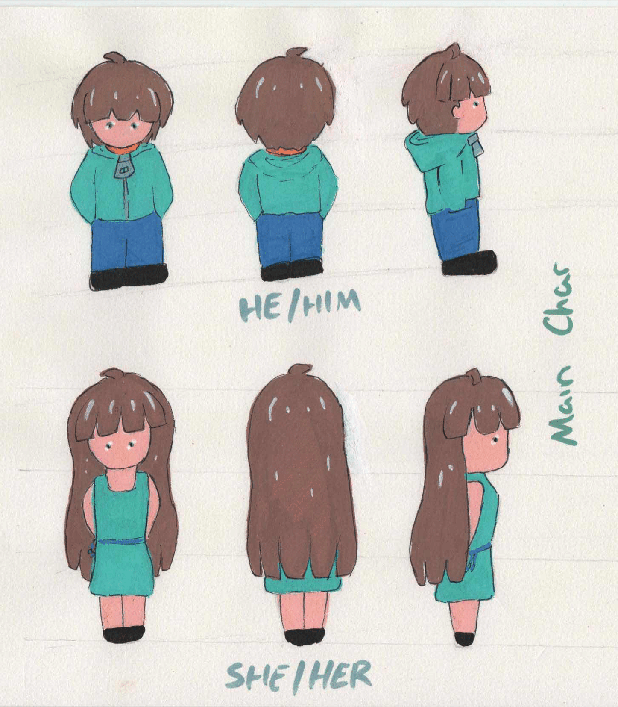
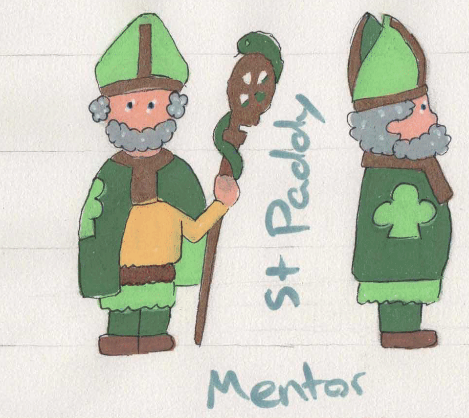
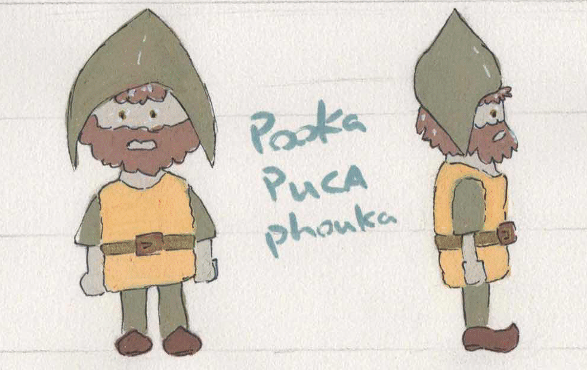
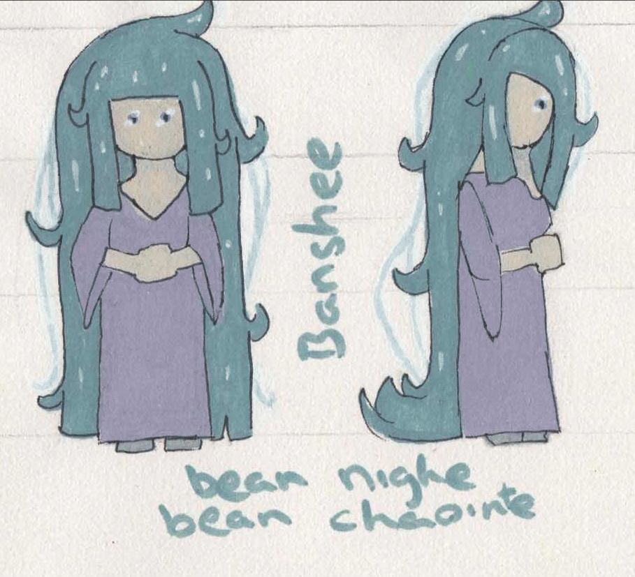
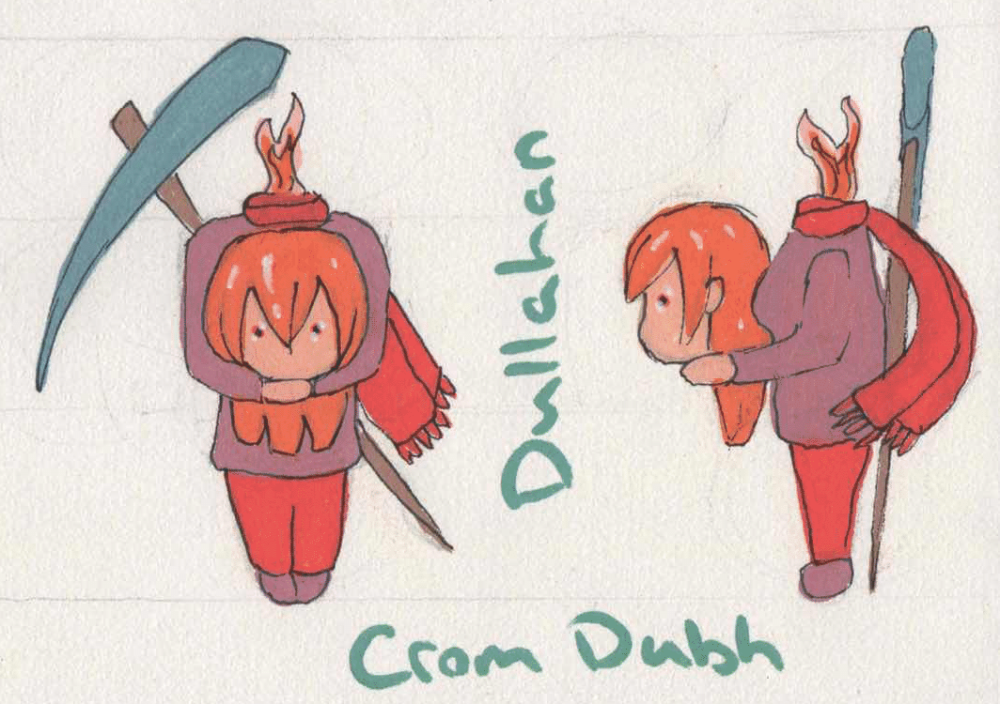
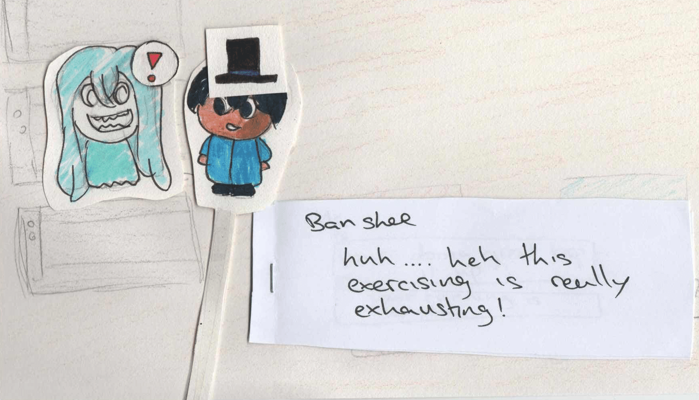
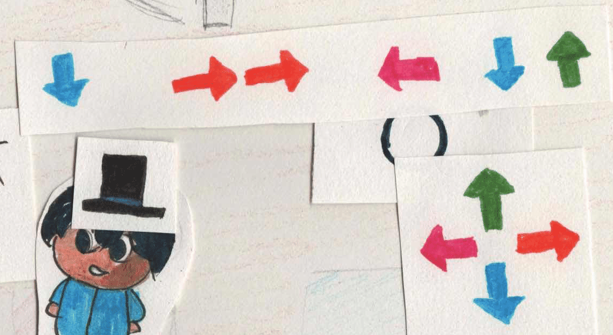
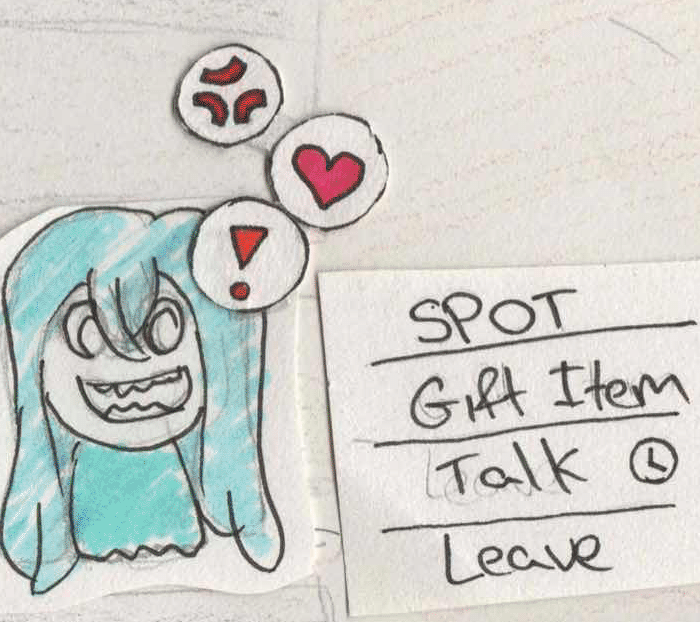

What is Exercise Your Demons
Exercise Your Demons is a 2D narrative game based on the ‘good people’ from Irish fairy tales and folklore. The player takes the role of a character who is struggling to find a job but under mysterious circumstances winds up working in a gym filled with good people.
Genre
This is a cozy narrative game with some dark themes.
Early Prototype
Narrative Design
This is a character driven narrative where the main character is trying to get their life back together. They do this by making friends with other characters in the town. The initial brainstorming has helped shape the current narrative which will evolve over the course of the project.

For the focus of the project, I will only focus on the Hero’s Journey - Act 1 (The Known). The player will play through the ‘Meeting of the Mentor’, the mentor being St Paddy, and start crossing the Threshold with character introductions. This is to limit scope, but below the narrative as a whole is discussed.
Game Setting
The narrative takes place across multiple locations in a fictional town called Inishsióg in county Galway, Ireland.
The player can visit multiple locations including a pub, shop, restaurant and their new workplace, the gym.
The first prototype of the setting can be seen below. It’s envisioned as a coastal area with multiple areas of interest for the player to visit.

Characters
This section describes all the characters and their stories.
Main Character
While not acknowledged at first, the main character is a changeling that has completed their purpose in life. They are searching for something new now as they grow into adulthood and move out to live on their own. In their past life, they replaced one of two twins that passed away in a car accident with their parents. It was an act of kindness to help the parents cope with their loss. This act of kindness is the reason why they are a fitting main character for this story.
Since they are a changeling, the player gets to choose if they are a male or female twin.

Side Characters
There are multiple characters that the player gets to meet throughout the narrative. The player’s goal is to meet and help them with their issues. If the player succeeds, they will grow themselves and hopefully find their goal in life. Since we’re dealing with fairies who are known to be tricksters and sometimes even bad omens, all bad endings lead to the main character’s death which needs to be avoided if you want to see the good ending.
St Patrick
This is the mentor character on our main character’s Hero’s Journey. He guides the main character in his daily duties and introduces all the good people the main character will need to befriend. He is also the proud owner of a local pub called Paddy’s Pub.

Pooka
The Pooka is a well known trickster who takes many forms. In this game, he will take the appearance of a goblin. His story will focus on trying to influence the character into making bad decisions. The main character needs to keep him from succeeding if they are to become better creatures.

Good Ending – The Pooka transforms into a black steed and takes the player out for a ride. They are speedy but careful and the ride ends with the Pooka granting the player some hidden knowledge while they stargaze together.
Bad Ending – Learning nothing of manners and morality, the player rides the Pooka in horse form off a cliff reaching a dead end. The last thing you see is the Pooka’s sinister grin atop the cliff as you fall to your doom.
Banshee
The Banshee’s story is one of fear and communication problems. She is clumsy and doesn’t really have a way with words. All her life, she has been trying to save humans from themselves but can’t seem to communicate this in the right way to anyone. As you get to know her, she starts trying to make friends with all of the other creatures too.

Good Ending – You and the others watch the Banshee sing at the pub. Its not perfect but its pleasant to the ears. The happy Banshee thanks you all and fades away with a smile. Her performance had saved someone from their fate which she had premonitions about, setting her free.
Bad Ending – You find the Banshee crying on the street after the main character misses her performance, which seems to have gone awry. She’s weeping for you, having seen a pre-cognition of your demise with no way to stop it. She runs off in tears and as you make your way back home a car swerves and crashes into you, taking your life.
Dullahan
The Dullahan is a stuck-up god of death with a knack for losing her head. She recounts stories of her past travels and asks the player for their opinions. This is a story of reflection which is something the Dullahan doesn’t seem to have a grasp on.

Good Ending – You find the Dullahan’s head on the side of the foot path. This reminds you of a chilling story the Dullahan talked about having her head stolen by humans. She shows up and is hesitant, before she acts you tell her you found her head, dust it off and hand it over. She thanks you and you proceed to chat for a while. She tells you about her success with dealing with her father.
Bad Ending – As you turn around to face the Dullahan after picking her head up, you see she seems off. Something bad happened and she’s out for blood. She proceeds to swiftly take your head and rides off into the night continuing to kill for the rest of eternity.
Game Mechanics
This section describes all the game mechanics and how they interact.
Character Selection
At the start of the game, the player will be prompted to select one of two characters to play the game as.
Dialogue System
The game will be dialogue heavy and will have text boxes that will display text for the player to read. The text needs to be ordered correctly and possibly allow for necessary changes in scenery if the narrative requires it to.

Gym Spotting System
This is a small rhythm game where you need to press arrow keys at the right time. Success determines if you get any friendship points with the character you’re interacting with.

Gift Giving System
You can buy gifts at the shop and give them to the characters. If they like it, you can get some extra friendship points. If they hate it, you will lose some points.

Friendship System
Each character you interact with has a friendship meter. When you reach the end of their story you will either get a good or a bad ending depending on how well you treated them.
This will be indicated to the player in the form of heart & anger icons coming from the characters they are interacting with.

Time Management
As the player interacts with the characters, time will pass. When they do it at the gym, they will be paid which will allow them to buy items.
Audio Design
This section describes the audio design and implementation for the game. To speed up the game development process, the audio for this game will be sourced from freesound.org. Any edits will be made in Audacity.
Mood
The music and sounds should take inspiration from Irish Culture to match the theme of the project. Some influences from 8bit and 2D games are expected.
This playlist Instrumental mix • Irish music can be referenced as an inspiration
Asset List
| Description | Location | Trigger | Category |
|---|---|---|---|
| Happy Music | Anywhere | Happy Character Events | Music |
| Sad Music | Anywhere | Sad Character Events | Music |
| Default Music | Anywhere | Anywhere | Music |
| Doorbell in shop | Shop | Enter/Exit Shop | SFX |
| Door Opening | Anywhere | Enter Location | SFX |
| Door Closing | Anywhere | Exit Location | SFX |
| Idle Pub Chatter | Pub | Enter Location | Ambiance |
| Buying an Item | Shop | Purchase Item | SFX |
| Successful Interaction | Anywhere | Give Item/Talk/Spot | SFX |
| Unsuccessful Interaction | Anywhere | Give Item/Talk/Spot | SFX |
| Mini game songs | Gym | When spotting at gym | Music |
| Minigame Successful Click | Gym | Clicks note correctly | SFX |
| Minigame Unsuccessful Click | Gym | Fails note click | SFX |
| Female Character Chatter | Anywhere | Talking with NPC | Dialog |
| Male Character Chatter | Anywhere | Talking with NPC | Dialog |
| Gym Equipment Moving | Gym | Enter Location | Ambiance |
SWOT Analysis
Strengths
- Strong concept with a lot of potential.
- Solid foundation to start narrative writing & implementation
- Niche in the market - Irish Folklore in games
Weaknesses
- Potential to Promote misinformation - requires solid research
- Limited narrative writing experience - allow time for rewrites
- A lot of scope has been cut due to time constraints so the impact of the narrative will likely suffer.
Opportunities
- Create something unique with interesting themes and characters
- Increase representation of Irish myths and culture in games
- Has potential to teach users something new
Threats
- Can a cut down version of my narrative answer my research question?
- Project timeline is short, if anything is delayed the project could be at risk.
Project Management
The timeline for this project is defined in the gantt chart below.

Tooling
- Hand drawing & Krita – 2D Assets
- Raylib & C++ – Programming Stack
- R & Markdown – Documentation, Data Analytics & Charts
- Google Forms – Surveys
- Audacity – Audio Design
- Vistaprint – Branding & Merch
- Git & One Drive – Project & Data Storage